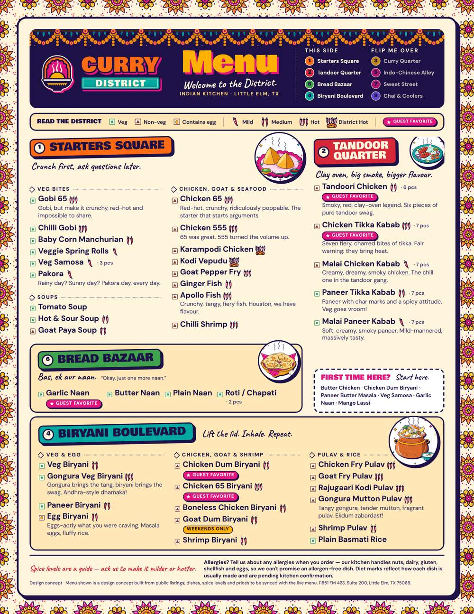
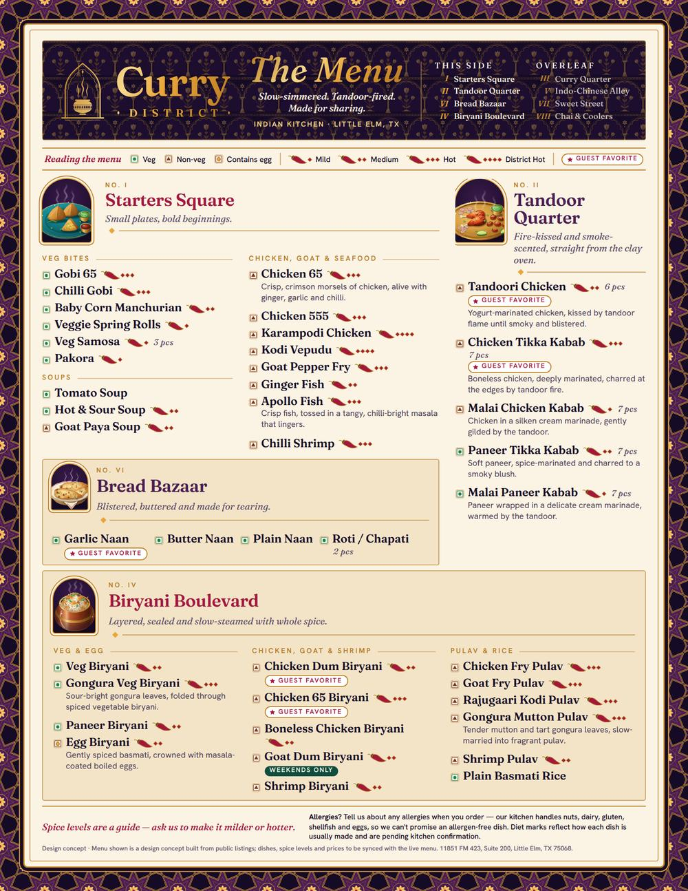

101
dishes to scan
Hunting through a long list on a busy evening means guests fall back on what they already know.
Sample 04 · Menu & table
Curry District cooks Andhra fire, tandoor smoke, dum biryani and wok-tossed Indo-Chinese, all on one menu. We turned that big, generous list into eight easy-to-read zones, with clear icons and a print kit that looks like you.
01
More than a hundred dishes is a real strength. As one long list, though, it makes guests do the work.
101
Hunting through a long list on a busy evening means guests fall back on what they already know.
5
From not spicy to Andhra-hot. If heat isn’t shown clearly, first-timers either play it safe or get a surprise.
0
Prices stay off every sample until you confirm the live menu. We designed the layout so they slot in later.
02
Every printed piece, board and screen uses the same six rules.
Built to fit: an auto-fit script checks every column. When space runs short it keeps descriptions for favorites and unfamiliar dishes (Kodi Vepudu, Gongura, Rajugaari) and lets well-known classics stand on their names. Type never drops below 9 pt for dish names.
03
Drag across side 1 of the dine-in menu to compare Bazaar and Royal.


US Letter, two sides, printed with a 3 mm bleed. Tap the gallery below to zoom in on every piece.
04
Menu, table tent, door-hanger, three wall boards and a legend card. Filter by direction or piece, and tap to zoom.
05
The same key appears on the menu, the tent, the boards and the takeout pieces.
Spice levels are a guide — ask us to make it milder or hotter.
Spice levels are a guide — ask us to make it milder or hotter.
Allergen footer, printed on every piece: “Tell us about any allergies when you order — our kitchen handles nuts, dairy, gluten, shellfish and eggs, so we can’t promise an allergen-free dish.” The legend card also lists the nine major US allergens as a prompt. It never says “free from.”
06
Each piece comes as a 3 mm bleed file for the printer and as a proof with crop marks. These are concept proofs to sign off before going to press.
Confirm stock, colour (CMYK proof) and quantities with your printer. Prices and dishes get synced with the live menu before anything goes to press.